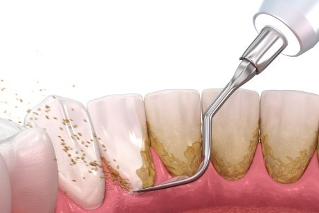

歯周病 PERIO
歯周病とは、歯の周りの歯周組織に炎症が起こっている病気の総称です。
炎症が歯ぐきのみに留まっている状態を「歯肉炎」といい、炎症があごの骨にまで広がっている状態を「歯周炎」といいます。歯周炎は以前歯槽膿漏と呼ばれていました。
歯周病の特徴は、痛みをあまり感じることなく進行することです。腫れたりして気がついた時には歯を支えている歯槽骨まで吸収して、ひどくなると歯がグラグラしたり、しっかりと噛めなくなり、最後には歯が抜け落ちてしまいます。歯周病の進行とともに口臭も目立つようになります。
また、歯周病は糖尿病などの生活習慣病と関連しており、歯周病は口だけでなく全身の健康にとっても予防が大切だといえます。
歯周病の原因はプラークです。プラークは細菌が増殖してできたものでバイオフィルムとも言われます。特に歯周病菌は酸素の少ない場所を好むので歯ぐきの溝の中に入って毒素を出して歯周組織を破壊します。
■ 歯周病の進行
正常
歯肉炎～軽度
中等度
重度
健康な歯周組織
歯ぐきは引き締まっていて、色はピンク色です。歯ぐきの溝は1～2mmです。
歯肉炎
プラークがたまった状態が続くと歯ぐきが赤く腫れてきて出血するようになります。歯ぐきの溝は2～3mmとなり、歯肉ポケットができてきます。
軽度歯周炎
歯ぐきの炎症がひどくなると、歯周病菌が歯ぐきの溝に侵入しあごの骨が破壊され始めます。歯ぐきの溝は3～4mmとなり、歯周ポケットという病的な溝になります。
中等度歯周炎
さらに炎症が深い部分まで広がり、骨も半分くらい破壊されて歯が揺れだしてきます。歯周ポケットは4～6mmとさらに深くなります。
重度歯周炎
歯を支えている骨の大半が破壊され、歯はぐらぐらになり、食べ物を噛むこともできず歯としての機能を失います。
■ 歯周病の治療
適切な歯磨きをしていただくことと、原因となる歯石やバイオフィルムを取り除くことが基本的な治療となります。また、支えている骨が無くなってしまった歯は負担を減らすかみ合わせの調整も必要です。
歯肉炎
適切な歯磨きで健康な歯ぐきに戻ります。
軽度歯周炎
歯磨きでは取り除くことができない歯石やバイオフィルムを専用の器具で除去します。これで健康な状態に戻ります。
中等度歯周炎
適切な歯磨きで健康な歯ぐきに戻ります
歯肉炎
歯ぐきの溝の深い部分にも歯石が付着しており、その歯石を直接目で確認することはできず、専用の器具を使い手探りで除去しますが原因となる歯石を除去することは困難になってきます。治療効果が思わしくない場合は、外科的に歯石の除去を行います。しかし、完全に歯石を除去できたとしても、健康であったときの元の状態には戻りません。
重度歯周炎
もはや歯としての機能を失っており、残念ながら抜歯になることがほとんどです。
しかし、おかだ歯科クリニックでは、患者さまがインプラントを考えておらず、患者さまの希望をよく聞いた上でですが、ぐらぐらの歯であっても、その歯を残すことが隣の歯や体に危険を及ぼさないと判断した場合は抜歯をせずに積極的に延命処置を行います。例え、数年間でもその歯で噛むことができるなら、すぐに抜歯するよりも患者さまにとって幸せであろうと考えているからです。
以上が歯周病の治療になりますが、歯ぐきの炎症がなくなったからとか、歯周ポケットが浅くなったからとかで歯周病の治療がこれで終了するわけではありません。残念ながら歯周病の治療は一生続けなければならないものです。歯周病は進行しても痛みがないのでなかなか気付くことができません。気付いたときには抜歯になるような重症になっていることが多々あります。
おかだ歯科クリニックでは、治療を終えられた患者さまごとに年に数回の定期検診およびメンテナンスをお勧めしています。
■ 歯周病のリスクファクター
全身疾患のリスク（歯周病にかかっている方は危険性が高くなります）
糖尿病・早産や低体重児出産・心臓循環器疾患・脳卒中などの脳血管疾患・誤嚥性肺炎などの呼吸器疾患
歯周病のリスク（口腔内）
プラークや歯石・歯並びが悪い・不適合な詰め物やクラウン・口呼吸や歯ぎしりなどの悪習癖
歯周病のリスク（生活習慣）
- ・喫煙
- 喫煙は歯ぐきの血行が悪くなり、タバコに含まれる一酸化炭素で歯周組織の酸欠を引き起こします。そのため、歯周組織は栄養不足になり歯周病菌に対する抵抗力が低下して重症化しやすくなります。
- ・食習慣
- 甘いものや、やわらかいものを多く食べていると、虫歯や歯周病の原因となるプラークを増殖させやすくします。また、不規則な食生活や偏った食事は歯周病を進行させやすくします。
- ・ストレス
- 精神的なストレスによって歯ぎしりなどの悪習癖や睡眠不足などで体の抵抗力が弱くなったりすると歯周病が悪化しやすい状態になります。